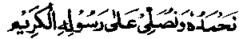
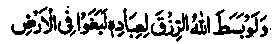

In the name of Allah, the compassionate, the Merciful.

We praise Him, and we invoke His choicest Blessings on His noble Messenger (Rasul).
(The Faza’il-e-Sadaqaat, was originally designed as one comprehensive volume but, when it was being sent to press, I thought that, for the convenience of readers, it would be better to publish the last two Chapters as a separate volume entitled "Faza’il-e-Sadaqaat Part two)".
Chapter Six
Need to Cultivate Contentment, Living within Minimum Means and Avoiding Asking Favours
In the Holy Qur’an and Ahadith, these three subjects have been recurringly treated through examples, warnings and relevant stories. In fact, the allusions are so numerous that even a brief account would involve considerable details.
We have observed, at the end of Chapter Two, that wealth is beneficial as well as harmful; it is both a cure as well as a poison. Rasulullah Sallallaho alaihe wasallam said, "For every Ummah (People), there has been a trial and a temptation; the temptation of my Ummah lies in wealth". Hence it is necessary to guard oneself against this temptation and its harmful effects. If someone possesses such a poisonous snake and he makes an antidote, it will be useful both for himself and for other people. Failing this, its poison will prove fatal for himself and will also harm others. It was in view of these harmful effects of wealth that Rasulullah Sallallaho alaihe wasallam once remarked, "This wealth is pleasant to see and inviting; it is beneficial for him who procures it by rightful means (in the manner prescribed by Shariah) and spends it properly, but he who procures it by unlawful means is like one suffering from a disease (جوع البقر) in which one goes on eating without being satisfied." (Mishkaat)
Imaam Ghazali Rahmatullah alaihe writes: "Worldly wealth can be at once beneficial and harmful for its possessor. It is like a snake. We see that whosoever knows the proper charms, can take hold of a snake, remove its fangs and prepare an antidote from it. But if a layman were to catch hold of a snake, in imitation of the snake-charmer, it would certainly bite him to death. Similarly, in order to be immune from the harmful effects of wealth, a person must take particular care about the following points:- 1. He must consider and know, for certain, the real purpose for which wealth was created by Allah Ta'ala, so that he may keep the same in view.
2. He should be vigilant about the sources of his wealth and beware of combining lawful means of earning with the unlawful ones, which include accepting a gift that may be suspected of being a bribe in disguise, or asking favours involving humiliation.
3. He should not put aside any amount beyond his actual requirements, and appropriately spend any such extra amount immediately.
4. He should also be vigilant about proper spending of money and beware of extravagant or forbidden expenditure.
5. While receiving money, spending it or putting it aside to the permissible extent, he must be sincere of intention and should, in all circumstances, seek the pleasure of Allah Ta'ala. If he has to keep back something for personal use or spend it on his own needs, he should do so primarily with the intention of gaining sufficient strength for performance of A'maal. Whatever amount of his money exceeds his needs should be quickly given away as something useless or superfluous. If a person then retains wealth, fulfilling all the conditions laid down above, it will not be harmful for him. Ali Radhiallaho anho once remarked to the following effect:
‘If anyone were to acquire all the riches of the world to seek Allah’s pleasure (but had no personal motive), he would still remain a true ‘Zaahid’ (an ascetic). On the contrary, if anyone were to renounce the world altogether, but not for Allah’s pleasure (aspiring to gain some recognition), he would still remain a man of the world". (Ihya)
Another Hadith says: "This wealth is pleasant to see and sweet to enjoy, but only he who gets it by rightful means will be blessed in it."
Still another Hadith says, "What an excellent abode is the world for him who makes it an asset for the life Hereafter and earns thereby the pleasure of Allah Ta'ala! How evil an abode is it for him who is prevented by it from preparing for the Akhirah and so is negligent of seeking the pleasure of Allah Ta'ala? (Kanz)
In short, there are many Ahadith which assert that worldly wealth is not in itself bad; rather, a number of Traditions affirm its usefulness, as numerous worldly and spiritual benefits are gained through its rightful use. For the same reason there occur, in many Ahadith, exhortations to earn livelihood and acquire wealth. However, as wealth also possesses a harmful and poisonous content and as human beings are prone to unhealthy practices, frequent warnings and prohibitions occur at various places in the Holy Qur’an and Ahadith against the accumulation of riches. Particularly, excess of wealth has been condemned as something undesirable-even fatal to human soul. Rasulullah Sallallaho alaihe wasallam once remarked, "When Allah Ta'ala loves a person, He protects him from the world just as (in certain cases) one protects a "patient from water". (Mishkaat)
It is common knowledge that water is absolutely necessary for life and that no human being can live without it but, if a physician says that water is harmful for a patient, we adopt all possible means to protect him from it. The same is also true of wealth, the excess of which generally proves harmful to the soul, as our hearts are not enlightened enough to be immune from its intoxicating effect. Rasulullah Sallallaho alaihe wasallam said, "Can anyone of you walk on water without getting his feet wet?" The Sahabah replied that no one could. He then said,"Similarly, it is difficult for a worldly person to protect himself from sins’. (Mishkaat)
We see that most of the deadly sins and cankers of the soul, viz. niggardliness, jealousy, pride, vanity, maliciousness, snobbery, haughtiness, etc., generally breed on excessive riches. Similarly, all the lustful sins--licentiousness, drinking, gambling, usury and the like—are also legacies of the excess of wealth. Moreover, human hearts are, by nature, so fond of money that the more they receive, the more covetously they struggle for its increase. There are numerous Ahadith of Rasulullah Sallallaho alaihe wasallam to the same effect, for example: "If anyone were to possess wealth to the extent of two ‘Wadies’ of gold, he would crave for a third."
We observe and learn from experience that no one is content with any amount (however great) of wealth, excepting a few blessed souls. For the same reason, at many places in the Holy Qur’an and in Ahadith, there is earnest advice to cultivate contentment in order that man’s unending hunger for wealth should decrease to some extent. Similarly, the true nature of the material wealth, its transience and its corrupting effect, have been explicitly stated, so that men should be less fond of wealth, realizing that transitory things are not worthy of human love and that man should set his heart upon things that endure eternally and whose benefits are everlasting. There are frequent exhortations in the Holy Qur’an and Ahadith for remaining patient in adversity and not regarding it as sheer misfortune. For, very often, man is made to suffer poverty because Divine Wisdom decrees it for his ultimate benefit Allah Ta'ala says:

If Allah were to enlarge the provisions for His men, they would surely rebel in the earth. (as-Shuraa: 27)
We all know from experience that places where men possess excessive wealth, are visited by riots and disruption. As excess of wealth is undesirable and, yet people have a weakness for it. Forbidding the seeking of favours and begging things from other people is a recurring theme in the Holy Qur’an and Ahadith. For, men who covet increase in wealth would beg from people without being driven to it by necessity, as the act of begging involves little physical labour and one can get increase in wealth, however paltry, just for the mere asking.
At this point, we quote a few Qur’anic Ayaat and Ahadith on the three subjects referred to above viz:
(i) Virtues of contentment;
(ii) Need for exercising patience in affliction;
(iii) Deprecation of begging and seeking favours, from the people.